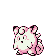

GlitchDexJP/RG:000
From Glitch City Wiki
Jump to navigationJump to search| ィﾞゃゾＡ | |
| Front: Back:  (v1.0) (v1.0) (v1.1) (v1.1)
| |
| Bulbapedia link | None |
| Equivalent glitch Pokémon | ィﾞゃゾＡ (Japanese Blue) ィﾞゃゾＡ (Japanese Yellow) |
| Generation II equivalent | |
| Generation II Pokémon needed for Time Capsule exploit | |
| Name bytes | 20 E0 0E 77 60 50 |
| Index number (hex) | 00 |
| Index number (dec) | 000 |
| Pokédex number (Family) |
000 |
| Pokédex marker byte | |
| Pokédex flag (seen) | Bit 0x7 of item 6's quantity (+128) |
| Pokédex flag (own) | Seen Cubone |
| Type(s) | Normal/Fighting |
| Category | マﾞﾞとヅ イﾞエﾞ ぶあﾞ とヅへへガオﾞあちとヅまﾟへへガオﾞあァとツ |
| Height | 3.3m |
| Weight | 43.3kg |
| Palette attribute byte | |
| Catch rate constant | |
| Experience group | |
| Experience yield | 1 |
| Sprite dimensions (base data) | |
| Front sprite source pointer | 0x0001 |
| Back sprite source pointer | 0x0001 |
| Front sprite dimensions (actual) | |
| Back sprite dimensions (actual) | |
| ← Previous glitch Pokémon | Current glitch Pokémon | Next glitch Pokémon → |
|---|---|---|
| アネﾞデパミﾞ (FF) | ィﾞゃゾＡ (00) | けつばん (many index numbers) |
ィﾞゃゾＡ (0x00) (romaji: iyazoA) is a dual-type Normal/Fighting-type glitch Pokémon in Pokémon Red and Green.
Its family number is 000.
Both the front sprite and the back sprite of this glitch Pokémon may freeze the game. It appears that either back sprite freezes may not occur in the v1.1 revision or are rarer in the v1.1 revision of the game (although it may cause the walking characters effect).
If this Pokémon is caught, it will add 128 to the sixth item quantity (if the quantity is less than 128), much like MissingNo. and the English 'M (00).
Contents
Methods to obtain
- 化石変換/Fossil conversion glitch (0 experience modulo 256)
- Equivalent trade of ィﾞゃゾＡ (Japanese Blue) or ィﾞゃゾＡ (Japanese Yellow).
- 任意コード実行/Arbitrary code execution
Starting moves
- はたく/Pound
- おうふくビンタ/DoubleSlap
Evolution(s)
Level 0 → |
 ピッピ (CLEFAIRY) |
Pokédex data
Level-up moves
|
TM/HM moves
- TM09: Take Down
- TM18: Counter
- TM33: Reflect
- TM41: Softboiled
- TM42: Dream Eater
Base stats
| Base stats | Level 50 stat range | Level 100 stat range |
|---|---|---|
| HP: 0 | 60-106 | 110-203 |
| Attack: 1 | 6-52 | 7-100 |
| Defense: 3 | 8-54 | 11-104 |
| Speed: 0 | 5-51 | 5-98 |
| Special: 1 | 6-52 | 7-100 |
Sources
- danny's data
- Pocket Monsters Midori v1.1
Categories:
- Glitch Pokémon which evolve
- GlitchDex
- Pokémon Red and Green glitch Pokémon
- Generation I glitch Pokémon
- Glitch Pokémon
- Family 000 glitch Pokémon
- Glitch Pokémon which learn a glitch move 0xA6-0xC3
- Glitch Pokémon which learn a TM/HM glitch move
- Normal-type glitch Pokémon
- Fighting-type glitch Pokémon
- Glitch Pokémon which affect item quantities